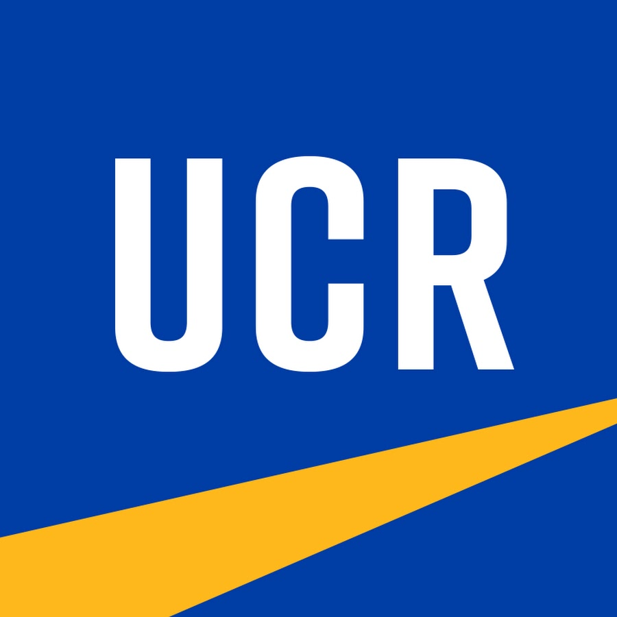
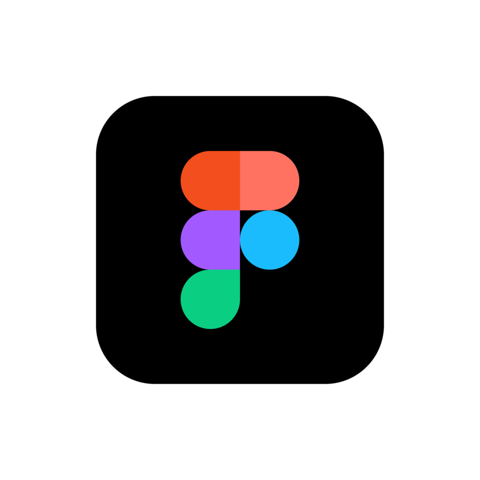

Resume
Download Resume (PDF) ↗experience
UCR Student Ambassador @ Adobe
May 2024 – June 2025
- Promoted Adobe's tools through social media, campus events, and student organizations.
- Organized workshops showcasing Adobe's software, reaching a wide student audience.
- Fostered a community of student creators through collaboration and mentorship.
- Gained hands-on experience with a global brand, sharpening communication and multitasking skills.
Visual Design & Marketing Intern @ Designer Drains
April 2024 – June 2025
U.S. e-commerce retailer of handcrafted luxury shower drain covers.
- Redesigned product storefront UX in Figma, resulting in a 20% increase in page engagement.
- Designed graphics and digital assets to support seasonal campaigns and brand growth.
- Analyzed Google Analytics to identify drop-off points and optimize product page layouts.
- Applied user-centered design to reduce friction between browsing and purchase intent.
Page Engagement ↑20%
UX/UI & Marketing Intern @ Nora AI
June 2024 – November 2024
Early-stage AI startup building voice-powered interview screening tools.
- Developed social media strategies to grow brand awareness on LinkedIn, Instagram, and campus.
- Designed wireframes and visual layouts for the main marketing website in Figma.
- Built Figma prototypes incorporating peer feedback to improve usability and flow clarity.

Social Media Content Creator @ HALIENE & Next Step Management
September 2023 – December 2024
- Collaborated with Next Step Management to design custom artwork and visual identity assets for EDM artist.
- Produced interactive content and visual assets with accessibility and inclusive design considerations.
- Designed exclusive album and merchandise prototypes, developed short-form media aligned with brand guidelines.
Historian & Pledge Educator @ UCR Alpha Phi Omega
August 2022 – December 2023
- Designed digital content and graphics that boosted member engagement.
- Led marketing initiatives promoting fraternity events and volunteering activities.
- Created and led fraternity-wide events for leadership skills and team bonding.
education
San José State University
Expected Graduation: June 2027

University of California, Riverside
skills + tools
UX/UIUX ResearchWireframing & Prototyping
Visual DesignMotion & Video Editing
Social Media

Figma